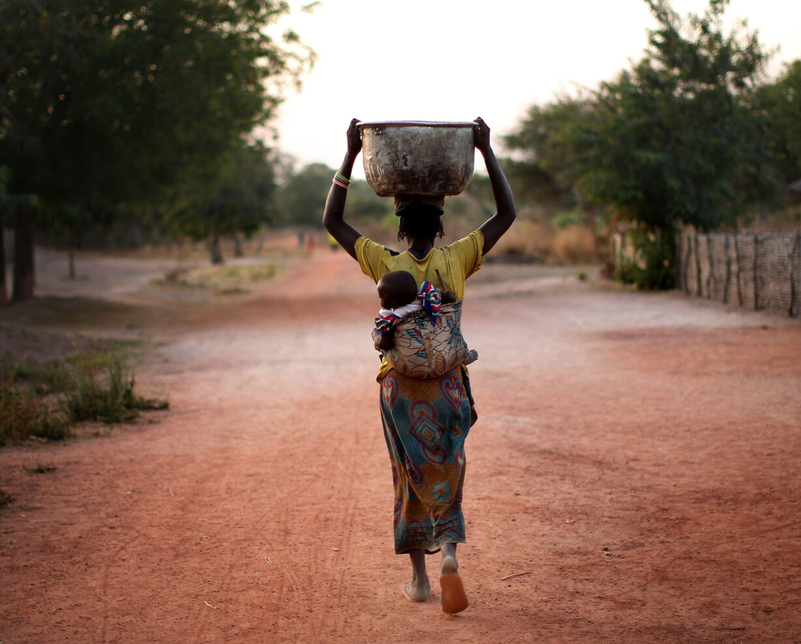

Traditional music with drums and string instruments.
Camel racing in desert regions,
Colorful clothing (boubou, turbans).
Strong oral storytelling traditions,
Hospitality to guests (sharing meals, tea ceremonies).
January 1 New Year's Day
April 13 National Day (independence)
August 11 Independence Day (1960)
December 1 Freedom and Democracy Day
Islamic holidays (Eid al-Fitr, Eid al-Adha)vary by year.
Chad has been home to ancient civilizations for thousands of years.
In the past, powerful kingdoms like Kanem-Bornu ruled the region.
In the 1900s, Chad became a French colony.
The country gained independence on August 11, 1960.

A woman walks barefoot on a dirt road, carrying a basin on her head and a baby on her back a glimpse of rural African life.